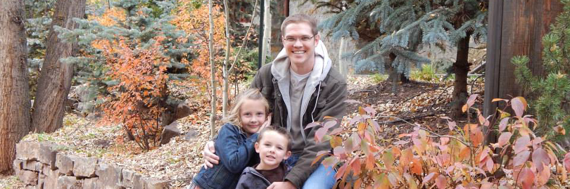

About Me

Thanks for stopping by and checking out my Blog. This website has been a lot of fun to make and I hope that you enjoy it!
A little about myself to get you started. My name is Tommy Dugger and I'm a computer geek. If it's technology based then I most likely dig it. I'm 35 years old, married, and have 2 children. I currently live in Cortez Colorado and have lived in this area of the US for almost my entire life.
I'm a Systems Administrator for a construction company here and I spend my days taking care of computers, networks, and doing some programming in .Net/C#. I've been in IT my entire career and I'm a bit burnt to say the least.
I'm studying programming, specifically web development to move my career in that direction. I'm set to attend Dev Bootcamp on July 14th and can't wait to get going. I love programming and this is my chance to move into something I love. There isn't much better than having a positive impact on someone through software. It's a great high and one that I want to stay on.
Take a look around and give me ideas or feedback if you want. You can find my email, github, and twitter accounts linked at the bottom right. Thanks again for stopping by!